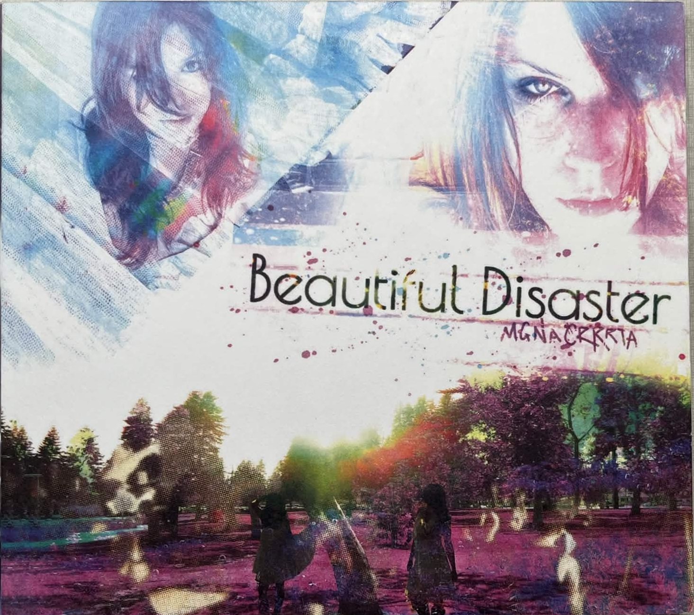
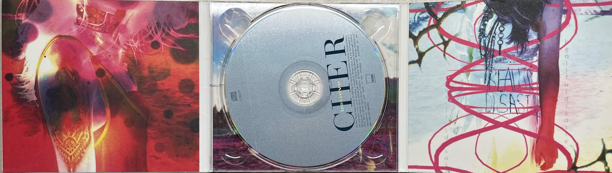

cd
awesome music :)
!!case type rankings!!
- cardboard (no image)
- i have one... smwhere
- digipak
- cardboard, extra art, and they age awesome destroyed ones are the best to find. yes they are hard to store but makes me love em more.


- jewel case
- just the disc
-
-
- slim case
for 2 seconds I will try to explain in a really dry way: the physical disc is
fun, its not all about nostalgia! you get to hold the music
on to the way that you can play that thing and a whole containment of physical art that surround it,
its like they extended the music into your hands. different from music listening i've done for a long time, its like i forgot.
big fan of the time capsule aspect of it too.
different commercial design eras, or ways the discs were used (compilation cds, radio releases, eps)
old news.
they sound better in the car too
and they just play